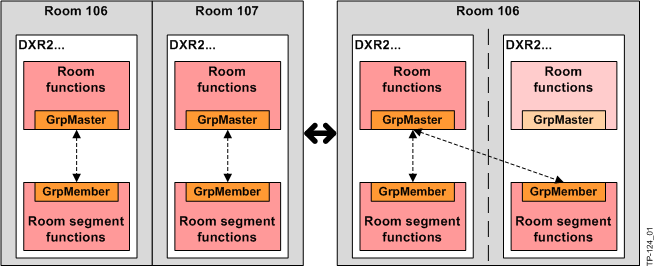
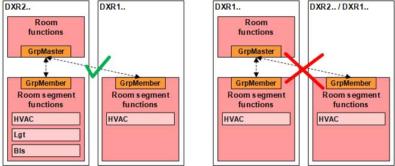

Room/segment
Flexible room occupancy
Economic and flexible use of a building during operation requires that a building be structured as needed.
Examples:
- Variable use of a floor from individual offices to open-plan office.
- Separation of large room into three smaller rooms using two temporary dividers.
Definition of room segment and room
The building is divided into room segments (grid segments, normally determined by building architecture) for this purpose. A room segment represents the smallest, functional unit for later use. Room segments form a physical room either alone or together with neighboring segments.
A room consists of one or multiple room segments as one physical room
If room dividers are removed, large rooms are created by adjoining multiple room segments. If room dividers are built in or integrated temporarily, the various room segments generated are assigned to different, new rooms.
Implementation in Desigo Room Automation
Room automation maps this kind of room division by means of room functions and room segment functions.
At its extreme, room division results in many individual offices, whereby each room segment represents one room.
Another extreme case is the open-plan office taking up an entire floor, where all room segments of a floor are assigned to one single room.
Oftentimes, a floor is divided into North and South side, or the four directions, as each of them requires a different type of control due to their location.
Assigning hardware and functions
Input and output devices belong to a room segment, i.e. sensors, switches, and actuators for HVAC, lighting, and shading.
All functions belong to the room that are common to one or multiple segments, i.e. coordination of HVAC, lighting, and shading, control of temperature and ventilation as well as control strategies.
This significantly simplifies engineering. In the case of individual offices, each room is a room segment. In the case of the large open-plan office, a large number of room segments belongs to the same room. Room segment functions are then controlled by one single room function via grouping.
Engineering example
Rooms 106 and 107 are combined by adding segment 107 to the group manager room 106. This is done simply by changing the group number on the segment via BACnet client or drag-and-drop in the building manager. The room functions for room 107 are set in the background to "Inactive". The procedure can be undone at any time.

Restriction for MS/TP
With MS/TP the number of commandable group elements is restricted, and communication is too slow for light and shading operation. Hence, the grouping of several room segments is only possible with HVAC.
 CAUTION
CAUTION

Grouping of several room segments with MS/TP only allowed for HVAC
The engineered solution only works, if solely HVAC applications are present in both room segments. There is no automatic algorithm in ABT, which prevents a faulty grouping.
- On MS/TP devices, only group room segments with HVAC applications.

Restriction for DXR1 room automation stations
The DXR1 room automation stations do not support group manager functions. The room function of the DXR2 room must control DXR1 room segments.
